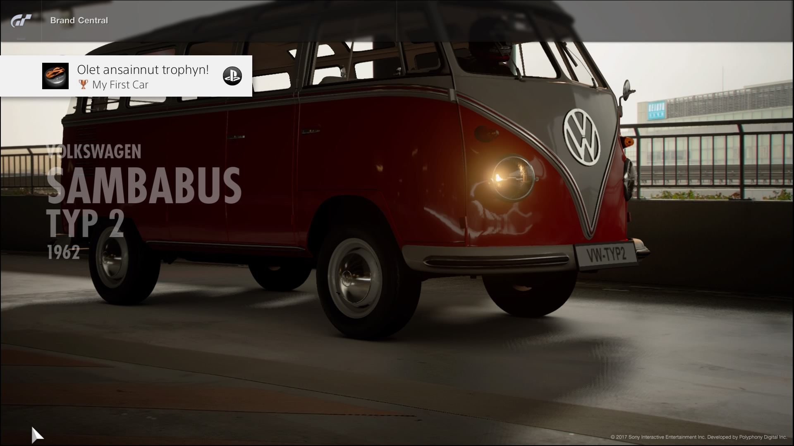

Driveclub

Driveclub on PlayStationin yksinoikeuspeli, ja sen kehittäjä on Evolution Studios. Peli on siis kilpa-ajopeli, jossa omaa tasoaan voi kerryttää suorittamalla ratoja sekä haasteita. Pelissä on eri valmistajien autoja, kuten esimerkiksi Audi, Mercedes-Benz, Suzuki ja Porche. Ajaminen sijoittuu kaupunkeihin, jotka sijaitsevat eri maissa, kuten Norjassa, Chilessä tai Kanadassa. Driveclubin palvelimet suljettiin vuonna 2020, minkä vuoksi pelitiedot eivät tallennu automaattisesti palvelimelle, mutta ne pysyvät konsolin sisäisessä tallennustilassa ja mahdollisilla varmuuskopiointiasemilla.
Gran Turismo

Gran Turismo on pelisarja, jonka kehittäjä on Polyphony Digital. Pelit ovat pelattavissa eri PlayStation-konsoleilla pelistä riippuen. Peli on realistinen, siinä on hyvät grafiikat ja hyvä ajotuntuma, varsinkin jos käyttää ohjaimen sijaan rattia ja polkimia. Pelissä on myös hyvin vanhoja autoja, kuten Volkswagen Transporter T1, jolla itsekin olen ajanut pelissä. Se ei kulje kyllä kovin lujaa, mutta hauskanpito onnistuu silti.
WipEout Omega Collection
WipEout Omega Collection on Sonyn yksinoikeuspeli, joka on kooste sarjan aiemmista peleistä, kuten WipEout HD:sta, WipEout 2048:sta ja WipEout Fury:stä. Peli on futuristinen, eikä siinä ajeta tavallisilla autoilla, joissa on renkaat. Sen sijaan kulkuneuvot ovat vaakasuunnassa eteneviä leijuvia ilma-aluksia. Myös pelin kartat ovat futuristisia, ja osa niistä sijoittuu kaupunkeihin tai leijuu korkealla taivaalla. Pelissä on kolme kampanjaa, HD, 2048 ja Fury, itse pidän eniten HD:sta. Pelissä on erilaisia pelitiloja, joita ovat yksittäinen kisa, aika-ajo, nopeuskierros, turnaus, eliminaattori ja alue. Yksittäinen kisa on perinteinen kisamuoto, jossa nopein voittaa. Siihen vaikuttaa kuitenkin se, onko käytössä aseet vai ei. Jos aseet ovat käytössä, radalta pystyy keräämään erilaisia aseita, kuten ohjuksia, iilisäteitä, pommeja, miinoja, järistyksiä sekä plasman. Niillä voi vahingoittaa toisen pelaajan tai tekoälyn alusta, jolloin se menettää energiaa ja monista aseet myös hidastavat vauhtia. Esimerkiksi plasmalla on vaikea osua, mutta osuessaan se tekee erittäin paljon vahinkoa. Iilisäde sen sijaan on ase, jolla voi varastaa energiaa toiselta alukselta. Nopeuskierrokset ja aika-ajot pelataan yksinpelinä. Alue on pelimuoto, jossa pelaaja yrittää kulkea aluksellaan mahdollisimman pitkän matkan. Ajon aikan aluksen nopeus kasvaa, mikä tekee ajamisesta haastavampaa. Törmäyksistä ja ulosajoista menettää energiaa, jolloin loppu on lähempänä. Pelissä on erilaisia nopeusluokkia, ja hitain on venom (alue-tilassa ali-venom) ja nopein taas phantom (alue-tilassa paljon nopeampia luokkia, kuten Zen). Ajoradan väriteema vaihtuu nopeusluokan vaihtuessa, mutta värit ovat räikeitä ja kirkkaita, kuten oranssia, violettia, vaaleanpunaista, kirkkaan sinistä, ja ne sykkivät pelin nopeatempoisen musiikin tahdissa, mikä voi aiheuttaa pahoinvointia joillekin ihmisistä. Tämän lisäksi pelissä on nykyään VR-tila, jolloin pelaaja pääsee ajamaan alusta sen sisältä kolmiulotteisessa maailmassa. Itse pidän siitä paljon, mutta siinä on vielä joitakin laseista johtuvia ongelmia, kuten näkökentän kapeus, alhainen resoluutio sekä lasien epämukavuus päässä. Tulevaisuudessa nämä ongelmat varmasti häviävät, kun lasit kehittyvät koko ajan, mutta toisaalta ovat melko kalliita.
MudRunner
MudRunner on vuonna 2017 julkaistu off-road-tyyppinen ajopeli, jossa pelaajan pitää suorittaa erilaisia kuljetustehtäviä haastavissa olosuhteissa. Kuormat voivat olla esimerkiksi tukkikuormia, jotka pitää kuljettaa metsän tai suon läpi perille. Peli sijoituu niin ajoneuvojen kuin miljöönkin suhteen Neuvostoliittoon, sillä ympäristö on karua ja harmaata suomaista aluetta ja Tšernobylin kaltaisia hylättyjä lähiöitä. Tehtävää suoritettasessa ensin valitaan tehtävä ja sitten ajettava reitti kartalla. Kun reitin on määrittänyt, se tulee kartan lisäksi näkyviin itse maailmaan punaisena nauhana, jota on helppo seurata. Reittiä ei kannata eikä pystykään kuitenkaan täsmällisesti noudattamaan, koska yleensä eteen tulee puita, kalliojyrkänteitä, syviä jokia yms. esteitä, jotka on kierrettävä. Suurimmassa osassa ajoneuvoja kaikki pyörät vetävät. Nimensä mukaisesti mutaan voi juuttua, mikä on yleensä peleissä harvinaista. Kiinni jääminen on mielenkiintoista, koska se pakottaa pelaajan miettimään, miten päästä irti. Pelaajan apuna on ajoneuvon keulassa oleva vinssi, jonka voi kiinnittää esimerkiksi puuhun. Tässäkin täytyy miettiä ja kokeilla, millaiseen puuhun sen voi kiinnittää, koska ihan laho puu ei kestä raskasta ajoneuvoa ja katkeaa. Ajaessa tulee noudattaa varovaisuutta, ettei kuorma pääse putoamaan kyydistä, kuten allekirjoittaneellekin on käynyt. Vaikka ajoneuvot ovat maastokelpoisia, ne eivät ole kuitenkaan mitään panssarivaunuja tai sukellusveneitä, joten esimerkiksi puuhun törmääminen suurella nopeudella tai liian syvään veteen ajaminen vahingoittaa ajoneuvoa tai pahimmassa tapauksessa rikkoo sen niin, että se täytyy hinata. Liikkuakseen ajoneuvot tarvitsevat polttoainetta, jota saa huoltoasemilta. Jos polttoaine loppuu, sitä täytyy tuoda toisella ajoneuvolla.